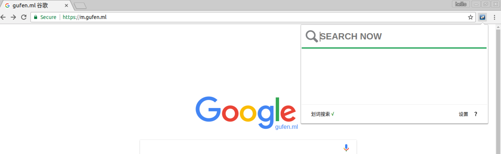
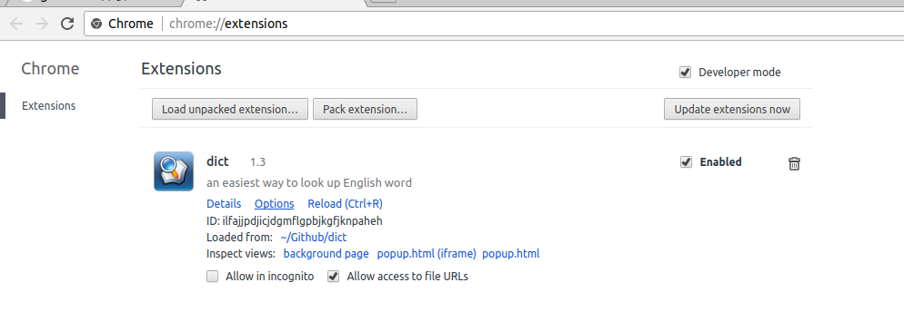

前段时间写了一个英文字典的扩展dict，学习了不同页面间的通讯方式，以dict为例子，总结一下这几种不同的方式。
扩展页面一共有三大类：popup，content-scripts和background。
一般情况下，需要持续使用的变量存在background页面中，该页面自浏览器打开一直留在内存中。popup和content-scripts页面随着打开关闭会释放相应的内存。
Popup页面，扩展图标直接点击出现的页面。

Background页面，浏览器启动后即运行的页面，适合存储扩展的状态变量，可以用作通讯的桥梁。在扩展设置中可以在Inspect views的background page中查看。

Content-scripts，注入到特定页面中的js。
popup页面发送：
chrome.tabs.query({}, function(tabs) {
for (var i = 0; i < tabs.length; i++) {
chrome.tabs.sendMessage(tabs[i].id, { flag: 'true' },function(response) {
console.log(response.param);
});
}
});
这里使用的是for循环向所有打开的页面发送消息。也可以指定窗口，具体详见chrome.tabs使用方法。
content-scripts接收：
chrome.runtime.onMessage.addListener(
function(request, sender, sendResponse) {
if (request.flag !== undefined) {
console.log(request.flag)
sendResponse({ param: "flag msg recieved"});
}
});
需要注意的是，使用chrome.tabs需要在manifest.json文件中增加tabs权限。
"permissions": [
"tabs"
]
应用：单击popup中的划词搜索，开启在任意页面上的划词功能。
单击时会执行chrome.tabs向所有页面发送一条开启或关闭的消息，页面接收后改变划词是否开启的状态。
content-script发送：
var port = chrome.runtime.connect({ name: "dict" });
port.postMessage({ height: windowHeight });
popup接收：
var port = chrome.runtime.connect({ name: "dict" });
chrome.runtime.onConnect.addListener(function(port) {
console.assert(port.name == "dict");
port.onMessage.addListener(function(msg) {
if (msg.height) {
console.log('msg recieved');
}
});
});
应用：在popup页面中查询一个单词后，content-scirpt注入到相应的网页取得查询结果的高度，返回给popup页面设置查询结果的高度。
background使用chrome.runtime.onMessage监听来自popup与content-scripts的请求，返回所需要的值。
一般情况不主动推送消息，只对消息进行被动反馈。
popup与content-scirpts发送消息：
chrome.runtime.sendMessage({ get: "height" }, function(response) {
var callback = response.param;
console.log("get response from background: " + callback);
});
background接收并返回：
chrome.runtime.onMessage.addListener(
function(request, sender, sendResponse) {
if(request.get == 'height'){
console.log("require height from content-scripts or popup")
sendResponse({param: 300});
//也可以没有返回，比如需要设置background中的状态
}
});
应用：
打开一个新页面时，content-scripts向background查询当前的划词搜索状态，进行当前页面的初始化；popup页面设置划词搜索状态，并向background发送设置信息，将状态保存在background中。
getBackgroundPage直接调用background变量在popup页面中，可以直接通过chrome.runtime.getBackgroundPage对bakcground进行变量的获取：
chrome.runtime.getBackgroundPage(function(w) {
isDragSearch = w.isDragSearch;
if (isDragSearch) {
console.log('dragSearch is available')
}
});
这是我在写扩展时用混合使用的几种通讯方式，完成了dict不同的通讯需求。但是根据不同的情况应该还有其他的方式，这里总结的不一定很全。
因为遇到问题时搜索的内容有很多过时的和不太详细的，自己出于复习与总结的目的，写了这个文章。